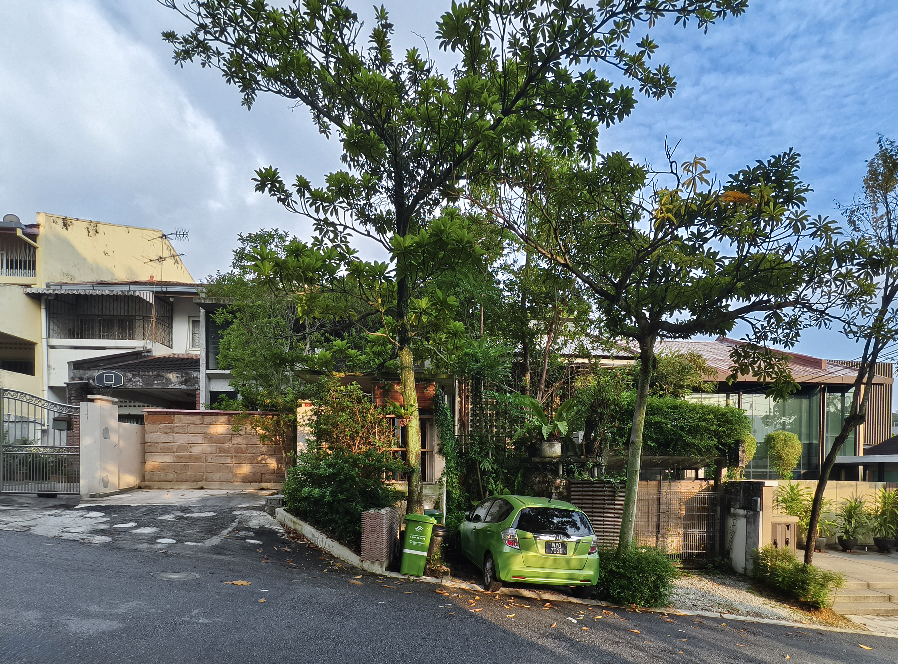
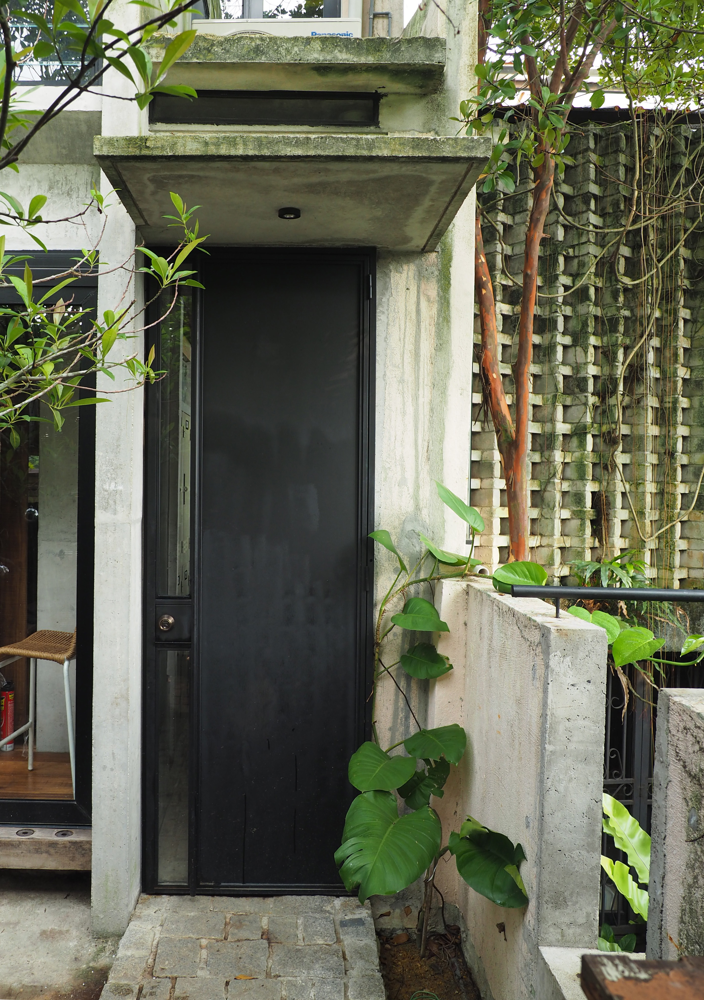
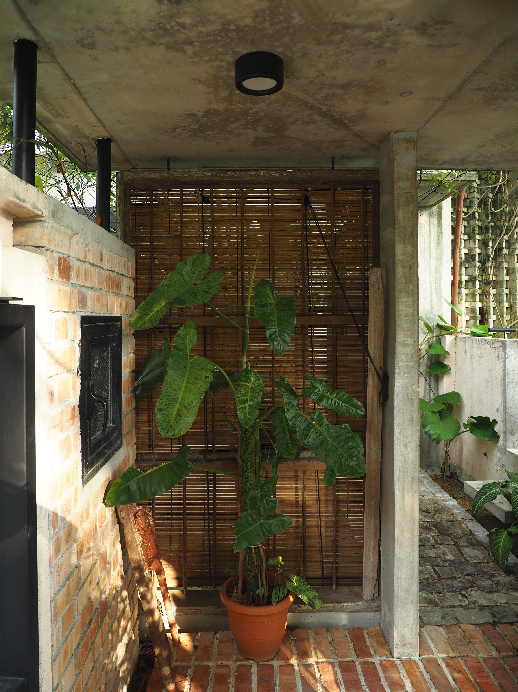
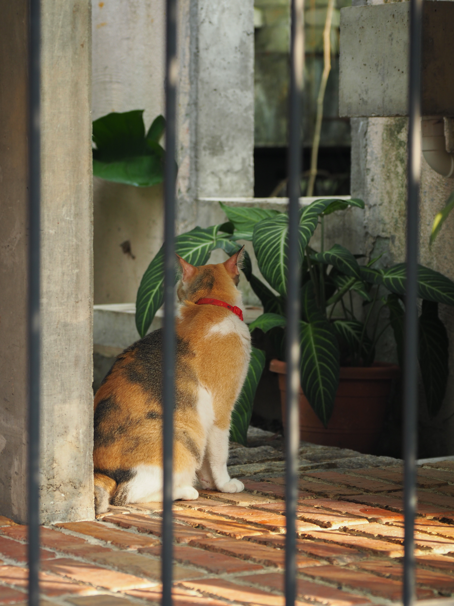
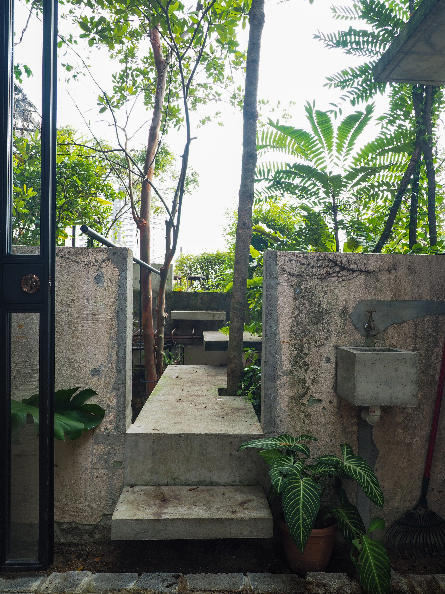
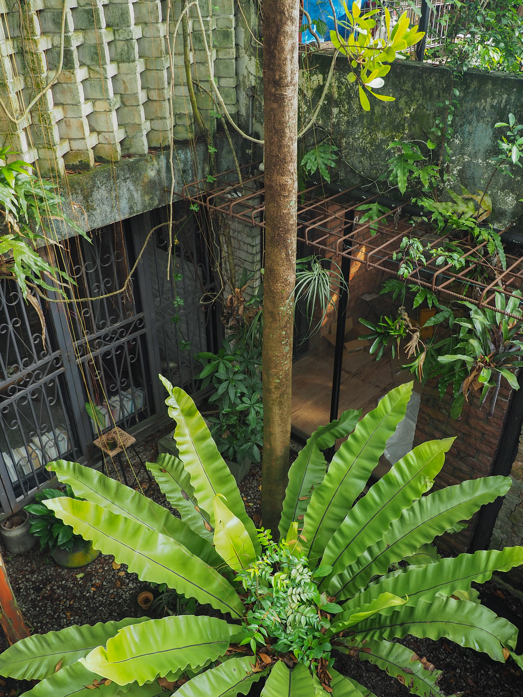
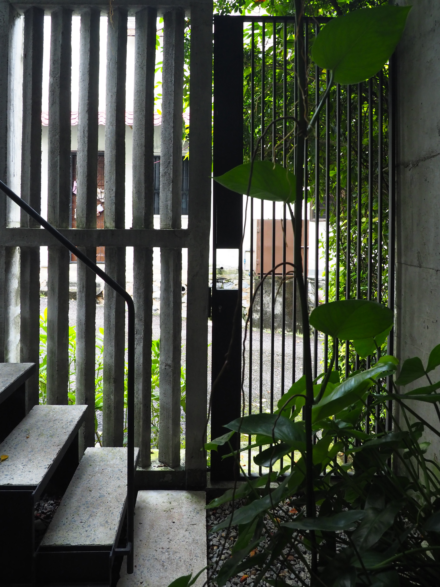

No.22 The Office
Year
2025
Type
Office
Team
Tetawowe
Location
Kuala Lumpur
Photographer
Lim Zhi Ru
This is where we work, where we design, and where we grow together.
Closely connected to our former office through a series of discreet corridors, this space is built with an extensive use of reclaimed items, shaping the essential places for daily work. It nurtures both present and future designers, while carrying every step Tetawowe has taken since its founding, and the collective effort of everyone who has been part of this journey.
Closely connected to our former office through a series of discreet corridors, this space is built with an extensive use of reclaimed items, shaping the essential places for daily work. It nurtures both present and future designers, while carrying every step Tetawowe has taken since its founding, and the collective effort of everyone who has been part of this journey.



Between the old and the new, the office unfolds gradually.
Movement through the space is never direct; instead, it is shaped by pauses, turns, and moments of encounter. Materials carry traces of previous lives, quietly reminding us that design is not only about making, but also about remembering, adapting, and continuing.
❮
 ❯
❯
❯









×